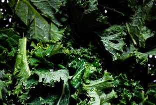

Welcome to Stardew Crop Info! This site aims to address a problem I personally have encountered quite a bit. I cannot find any for sure, 100% accurate and up-to-date information on which crops are best for each season. So I thought "Why not just make it?" Gotta choose something for the school project, right? This site will contain all the basic statistics for crops in the three major seasons of the game, including g and experience per day. Ya know, just in case you need to calculate the number of kale you need to hit farming 6 before summer starts.
This site has a lovely page for each of the (important) seasons in Stardew! Each page should provide you with enough information to make your own decisions about which crop to grow, or just find out which one is the best. Remember, there's no wrong crop to plant!
(Quick disclamer, not all of the math or statistics listed here are 100% accurate, but they are close enough that they represent significant data. A few of the g/day stats might be a little off, but for the most part, the conclusions are the same.)